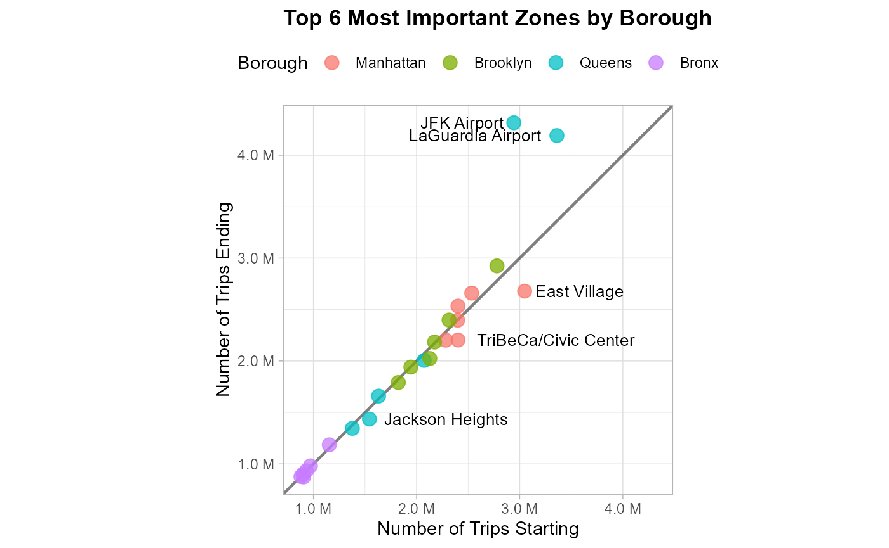
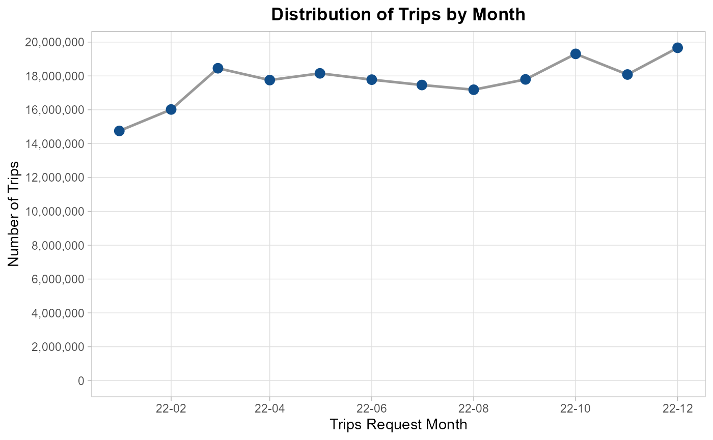
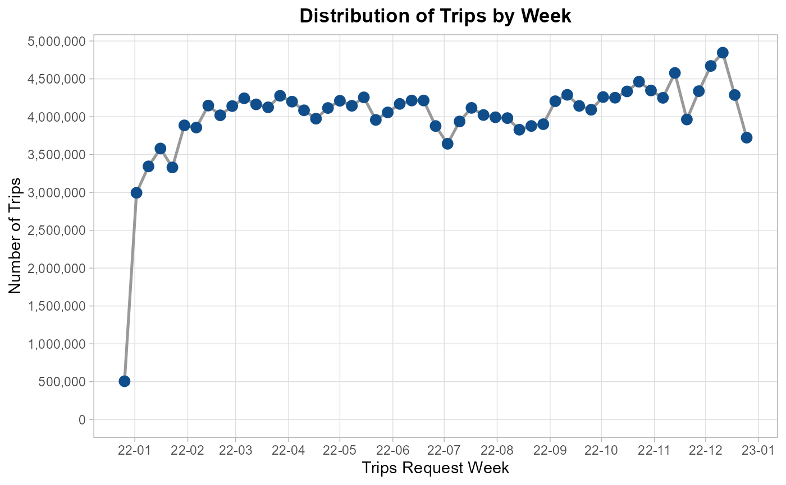
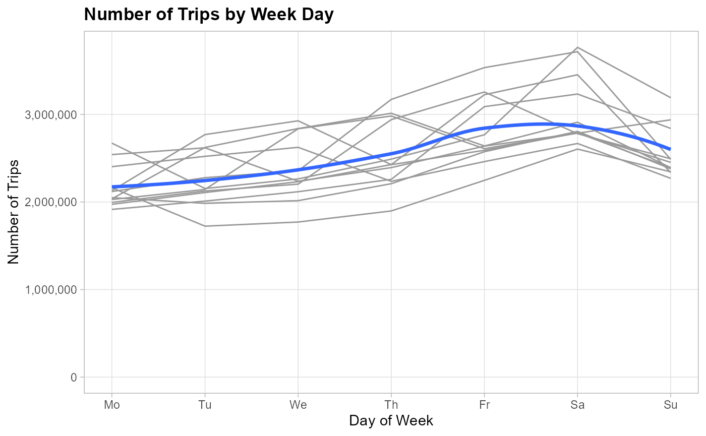
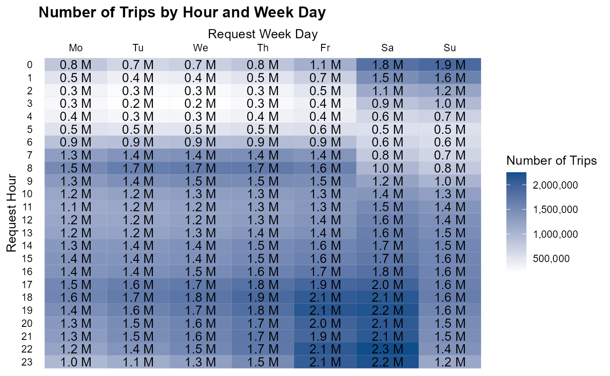

After completing the business understanding phase we are ready to perform the data understanding phase by performing an EDA with the following steps:
- Exploring the individual distribution of variables.
- Taking a subset of the data to fit in RAM.
- Exploring correlations between predictors and target variable.
- Exploring correlations between predictors.
In order to:
- Ensure data quality
- Identify key predictors
- Detect multicollinearity
- Guide model choice and feature engineering
Setting the environment up
To setting the R environment up we just need to apply
the following 4 steps:
- Loading the packages to use.
library(project.nyc.taxi)
library(here)
library(data.table)
library(ggplot2)
library(scales)
library(forcats)
library(lubridate)
library(dplyr)
library(arrow)
options(datatable.print.nrows = 15)- Creating an Arrow connection object to perform some manipulations in disk before taking the data into the RAM memory.
data_path <- here("raw-data/trip-data/year=2022")
NycTrips2022 <- open_dataset(data_path)
dim(NycTrips2022) |> comma()
#> [1] "212,416,083" "25"
NycTrips2022
#> FileSystemDataset with 12 Parquet files
#> hvfhs_license_num: string
#> dispatching_base_num: string
#> originating_base_num: string
#> request_datetime: timestamp[us]
#> on_scene_datetime: timestamp[us]
#> pickup_datetime: timestamp[us]
#> dropoff_datetime: timestamp[us]
#> PULocationID: int64
#> DOLocationID: int64
#> trip_miles: double
#> trip_time: int64
#> base_passenger_fare: double
#> tolls: double
#> bcf: double
#> sales_tax: double
#> congestion_surcharge: double
#> airport_fee: double
#> tips: double
#> driver_pay: double
#> shared_request_flag: string
#> shared_match_flag: string
#> access_a_ride_flag: string
#> wav_request_flag: string
#> wav_match_flag: string
#> month: int32
#>
#> See $metadata for additional Schema metadata- Importing the zone code description.
ZoneCodes <- fread(
here("raw-data/taxi_zone_lookup.csv"),
colClasses = c("integer",
"character",
"character",
"character")
)
glimpse(ZoneCodes)
#> Rows: 265
#> Columns: 4
#> $ LocationID <int> 1, 2, 3, 4, 5, 6, 7, 8, 9, 10, 11, 12, 13, 14, 15, 16, 17…
#> $ Borough <chr> "EWR", "Queens", "Bronx", "Manhattan", "Staten Island", "…
#> $ Zone <chr> "Newark Airport", "Jamaica Bay", "Allerton/Pelham Gardens…
#> $ service_zone <chr> "EWR", "Boro Zone", "Boro Zone", "Yellow Zone", "Boro Zon…- Counting the number of trips for each code, collecting and translating the zone codes.
TripsZoneDistribution <-
NycTrips2022 |>
count_pct(PULocationID, DOLocationID) |>
join_zones(zone_tb = ZoneCodes)
glimpse(TripsZoneDistribution)
#> Rows: 65,445
#> Columns: 9
#> $ start_borough <chr> "Queens", "Brooklyn", "Queens", "Brooklyn", "Brookl…
#> $ start_zone <chr> "JFK Airport", "East New York", "LaGuardia Airport"…
#> $ start_service_zone <chr> "Airports", "Boro Zone", "Airports", "Boro Zone", "…
#> $ end_borough <chr> "Unknown", "Brooklyn", "Unknown", "Brooklyn", "Broo…
#> $ end_zone <chr> "NA", "East New York", "NA", "Borough Park", "Canar…
#> $ end_service_zone <chr> "N/A", "Boro Zone", "N/A", "Boro Zone", "Boro Zone"…
#> $ n <int> 690618, 640891, 453413, 383687, 368971, 324967, 272…
#> $ pct <dbl> 0.003, 0.003, 0.002, 0.002, 0.002, 0.002, 0.001, 0.…
#> $ pct_cumulative <dbl> 0.003, 0.006, 0.008, 0.010, 0.012, 0.014, 0.015, 0.…Individual distributions
Categorical variables
Let’s starting counting and checking the proportions related to each category.
company
The majority number of trips are done by Uber (HV003) and the rest for Lyft.
NycTrips2022 |>
count_pct(company = case_when(hvfhs_license_num == "HV0002" ~ "Juno",
hvfhs_license_num == "HV0003" ~ "Uber",
hvfhs_license_num == "HV0004" ~ "Via",
hvfhs_license_num == "HV0005" ~ "Lyft"))
#> company n pct pct_cumulative
#> <char> <int> <num> <num>
#> 1: Uber 153847310 0.724 0.724
#> 2: Lyft 58568773 0.276 1.000To improve interpretavility we need to make the same translation after sampling the data.
dispatching_base_num
For most of the trips the dispatching number are B03404 and B03406. The remaining codes represent a small proportion of observations.
NycTrips2022 |>
count_pct(dispatching_base_num)
#> dispatching_base_num n pct pct_cumulative
#> <char> <int> <num> <num>
#> 1: B03404 153732577 0.724 0.724
#> 2: B03406 58568773 0.276 1.000
#> 3: B02764 54512 0.000 1.000
#> 4: B02872 6078 0.000 1.000
#> 5: B02395 4789 0.000 1.000
#> ---
#> 25: B02878 591 0.000 1.000
#> 26: B02879 458 0.000 1.000
#> 27: B02875 213 0.000 1.000
#> 28: B02883 137 0.000 1.000
#> 29: B02865 3 0.000 1.000originating_base_num
For most of the trips the originating number is B03404 and the second is missing. The remaining codes represent a small proportion of observations.
NycTrips2022 |>
count_pct(originating_base_num)
#> originating_base_num n pct pct_cumulative
#> <char> <int> <num> <num>
#> 1: B03404 153730161 0.724 0.724
#> 2: <NA> 58498724 0.275 0.999
#> 3: B03406 71481 0.000 0.999
#> 4: B02764 54511 0.000 0.999
#> 5: B02872 6078 0.000 0.999
#> ---
#> 33: B02003 10 0.000 0.999
#> 34: B00446 6 0.000 0.999
#> 35: B01985 5 0.000 0.999
#> 36: B02865 3 0.000 0.999
#> 37: B02826 1 0.000 0.999access_a_ride_flag
Must of the trips doesn’t provide any information related to whether they were administered on behalf of the Metropolitan Transportation Authority (MTA) and the remaining confirm that there aren’t.
NycTrips2022 |>
count_pct(access_a_ride_flag)
#> access_a_ride_flag n pct pct_cumulative
#> <char> <int> <num> <num>
#> 1: 153847310 0.724 0.724
#> 2: N 58568773 0.276 1.000shared_request_flag
Most of passengers don’t request to a shared/pooled ride.
NycTrips2022 |>
count_pct(shared_request_flag)
#> shared_request_flag n pct pct_cumulative
#> <char> <int> <num> <num>
#> 1: N 210564721 0.991 0.991
#> 2: Y 1851362 0.009 1.000shared_match_flag
Most of passengers don’t request to a shared/pooled ride, but even fewer achieved to share the ride.
NycTrips2022 |>
count_pct(shared_match_flag)
#> shared_match_flag n pct pct_cumulative
#> <char> <int> <num> <num>
#> 1: N 211916075 0.998 0.998
#> 2: Y 500008 0.002 1.000wav_request_flag
It’s really unusual to request a wheelchair-accessible vehicle.
NycTrips2022 |>
count_pct(wav_request_flag)
#> wav_request_flag n pct pct_cumulative
#> <char> <int> <num> <num>
#> 1: N 212142808 0.999 0.999
#> 2: Y 273275 0.001 1.000wav_match_flag
It’s really unusual to request a wheelchair-accessible vehicle, but we have more tips take place in wheelchair-accessible vehicles, so it seems that the service has the capacity to meet the demand.
NycTrips2022 |>
count_pct(wav_match_flag)
#> wav_match_flag n pct pct_cumulative
#> <char> <int> <num> <num>
#> 1: N 199779404 0.941 0.941
#> 2: Y 12636679 0.059 1.000start_borough
87% of trips start in Manhattan, Brooklyn or Queens.
TripsZoneDistribution |>
count_pct(start_borough, wt = n)
#> start_borough n pct pct_cumulative
#> <char> <int> <num> <num>
#> 1: Manhattan 88031630 0.414 0.414
#> 2: Brooklyn 54874948 0.258 0.672
#> 3: Queens 41897696 0.197 0.869
#> 4: Bronx 24797734 0.117 0.986
#> 5: Staten Island 2803425 0.013 0.999
#> 6: Unknown 10625 0.000 0.999
#> 7: EWR 25 0.000 0.999end_borough
82% of trips end in Manhattan, Brooklyn or Queens.
TripsZoneDistribution |>
count_pct(end_borough, wt = n)
#> end_borough n pct pct_cumulative
#> <char> <int> <num> <num>
#> 1: Manhattan 80967388 0.381 0.381
#> 2: Brooklyn 54143716 0.255 0.636
#> 3: Queens 40982171 0.193 0.829
#> 4: Bronx 23541369 0.111 0.940
#> 5: Unknown 8659223 0.041 0.981
#> 6: Staten Island 2755107 0.013 0.994
#> 7: EWR 1367109 0.006 1.000start_service_zone
96% of trips start in Boro Zone and Yellow Zone.
TripsZoneDistribution |>
count_pct(start_service_zone, wt = n)
#> start_service_zone n pct pct_cumulative
#> <char> <int> <num> <num>
#> 1: Boro Zone 129107636 0.608 0.608
#> 2: Yellow Zone 75817668 0.357 0.965
#> 3: Airports 7480129 0.035 1.000
#> 4: N/A 10625 0.000 1.000
#> 5: EWR 25 0.000 1.000We need to recode EWR are Airports to keep the classification consistent.
end_service_zone
91% of trips start in Boro Zone and Yellow Zone.
TripsZoneDistribution |>
count_pct(end_service_zone, wt = n)
#> end_service_zone n pct pct_cumulative
#> <char> <int> <num> <num>
#> 1: Boro Zone 124765613 0.587 0.587
#> 2: Yellow Zone 69100865 0.325 0.912
#> 3: N/A 8659223 0.041 0.953
#> 4: Airports 8523273 0.040 0.993
#> 5: EWR 1367109 0.006 0.999We need to recode EWR are Airports to keep the classification consistent.
start_service vs end_service zones
-
start_zoneandend_zone: As our data has 55,559 rows of relations between both columns, we opted to transform data in a way what each unique zone represent a row reducing the points to be plotted to only 238 by following the next steps:- Summarizing the total number of trips for each starting point independently to its destination
- Summarizing the total number of trips for each ending point independently to its origin.
- Joining both tables into one.
# 1. Summarizing Staring Zones
StartingZonesCount <-
TripsZoneDistribution[
!start_borough %chin% c("Staten Island", "Unknown", "EWR") &
!end_borough %chin% c("Staten Island", "Unknown", "EWR"),
.(start_trips = sum(n)),
by = .(borough = start_borough,
zone = start_zone)
]
# 2. Summarizing Ending Zones
EndingZonesCount <-
TripsZoneDistribution[
!start_borough %chin% c("Staten Island", "Unknown", "EWR") &
!end_borough %chin% c("Staten Island", "Unknown", "EWR"),
.(end_trips = sum(n)),
by = .(borough = end_borough,
zone = end_zone)
]
# 3. Inner Joining Starting and Ending Zones Counts
JoinedZonesCount <-
StartingZonesCount[
EndingZonesCount,
on = c("borough", "zone"),
nomatch = 0
]Once we have a much simpler data to work with, we is easy to confirm
with the next linear regression that start_trips and
end_trips has almost the same values the model has an slope
of one. That means that in must of cases if someone takes a taxi
to go to any place it’s really likely to take another taxi
back.
lm(end_trips ~ start_trips,
data = JoinedZonesCount) |>
summary()
#>
#> Call:
#> lm(formula = end_trips ~ start_trips, data = JoinedZonesCount)
#>
#> Residuals:
#> Min 1Q Median 3Q Max
#> -428723 -34008 9811 26938 1315702
#>
#> Coefficients:
#> Estimate Std. Error t value Pr(>|t|)
#> (Intercept) -2.274e+04 1.321e+04 -1.722 0.0864 .
#> start_trips 1.027e+00 1.231e-02 83.465 <2e-16 ***
#> ---
#> Signif. codes: 0 '***' 0.001 '**' 0.01 '*' 0.05 '.' 0.1 ' ' 1
#>
#> Residual standard error: 127400 on 236 degrees of freedom
#> Multiple R-squared: 0.9672, Adjusted R-squared: 0.9671
#> F-statistic: 6966 on 1 and 236 DF, p-value: < 2.2e-16Let’s now explore the zones where there is no
balance between the start_trips and the
end_trips in the most visited zoned of each Borough. To do
so, we defined the rate end_trips/start_trips
and highlight zones with lower rate than the 15% percentile or higher
rate than 85% percentile.
# Creating dataset to plot
ZonesCountToPlot <-
copy(JoinedZonesCount)[
j = `:=`(ending_starting_rate = end_trips/start_trips,
borough = fct_reorder(borough, -end_trips, .fun = sum, na.rm = TRUE),
end_m_trips = end_trips / 1e6L,
start_m_trips = start_trips / 1e6L)
][, unbalance_situation := fcase(
ending_starting_rate < quantile(ending_starting_rate, 0.15),
"More starts than ends",
ending_starting_rate > quantile(ending_starting_rate, 0.85),
"More ends than starts",
default = "Balanced"
)
][order(-(start_trips + end_trips)),
.SD[1:6],
by = "borough"]
# Creating the scatted plot
ggplot(ZonesCountToPlot,
aes(start_m_trips, end_m_trips))+
geom_blank(aes(pmax(start_m_trips, end_m_trips),
pmax(start_m_trips, end_m_trips)))+
geom_abline(linewidth = 0.8,
alpha = 0.5)+
geom_point(aes(color = borough),
size = 3.5,
alpha = 0.75)+
geom_text(data = ZonesCountToPlot[unbalance_situation ==
"More starts than ends"],
aes(label = zone),
size = 3.5,
hjust = -0.12,
check_overlap = TRUE)+
geom_text(data = ZonesCountToPlot[unbalance_situation ==
"More ends than starts"],
aes(label = zone),
size = 3.5,
hjust = 1.12,
check_overlap = TRUE)+
scale_x_continuous(labels = comma_format(accuracy = 0.1, suffix = " M"))+
scale_y_continuous(labels = comma_format(accuracy = 0.1, suffix = " M"))+
coord_equal() +
labs(title = "Top 6 Most Important Zones by Borough",
color = "Borough",
x = "Number of Trips Starting",
y = "Number of Trips Ending")+
theme_light()+
theme(legend.position = "top",
text = element_text(color = "black"),
plot.title = element_text(face = "bold"))
Based on the results, we can highlight the next points:
The airports present in Queens, LaGuardia Airport and JFK Airport, have many more trips going to the airport than going out of airport. This might happen due that there are more transportation options like other taxis, shuttles, and public transportation.
The remaining zones, Jackson Heights, East Village and TriBeCa/Civic Center, are residential zones with a variety of public transportation options.
Time variables
As we want to predict the profit rate related to
each trip, we just need to consider for this analysis
request_datetime as is the only variable available to the
driver before starting a trip and the dropoff_datetime the
point used to defining the end of a trip.
We know that a taxi trip takes more less than a day doesn’t make more
sense to explore each variable related to time. Instead, it is better to
consecrate the efforts to understand the distribution of the exploratory
variable later to explore the difference between
request_datetime and dropoff_datetime as a
numeric variable.
To describe this variable, we decomposed it in different parts and
count the number trips by each element and store the summary as a
data.table to explore each part using visualizations.
RequestTimeSummary <-
NycTrips2022 |>
mutate(request_date = as_date(request_datetime)) |>
count(request_month = floor_date(request_date, unit = "month"),
request_week = floor_date(request_date, unit = "week"),
request_day = day(request_date),
request_weekday = wday(request_date, week_start = 1),
request_hour = hour(request_datetime)) |>
collect() |>
as.data.table()request_datetime by month
In the next chart, we can see that the number trips keeps almost constant must of the year, but we have some fewer trips during the first 2 months and some extra trips in October and December.
RequestTimeSummary[year(request_month) == 2022,
.(n = sum(n)),
by = "request_month"] |>
ggplot(aes(request_month, n))+
geom_line(color = "grey60",
linewidth = 0.9)+
geom_point(color = "dodgerblue4",
size = 3)+
scale_x_date(date_labels = "%y-%m",
date_breaks = "2 months")+
scale_y_continuous(labels = comma_format(),
breaks = breaks_width(2e6))+
labs(title = "Distribution of Trips by Month",
x = "Trips Request Month",
y = "Number of Trips")+
expand_limits(y = 0)+
theme_light()+
theme(plot.title = element_text(face = "bold", hjust = 0.5),
panel.grid.minor = element_blank(),
legend.position = "top")
request_datetime by week
By breaking the months into weeks we can confirm we have fewer trips in the first 2 months, in relation to October we don’t see a big change in he number of trips we see is that it has more weeks than November, but December keeps having more trips than normal in the first 2 weeks.
RequestTimeSummary[year(request_month) == 2022,
.(n = sum(n)),
by = "request_week"] |>
ggplot(aes(request_week, n))+
geom_line(color = "grey60",
linewidth = 0.9)+
geom_point(color = "dodgerblue4",
size = 3)+
scale_x_date(date_labels = "%y-%m",
date_breaks = "month")+
scale_y_continuous(labels = comma_format(),
breaks = breaks_width(5e5))+
labs(title = "Distribution of Trips by Week",
x = "Trips Request Week",
y = "Number of Trips")+
expand_limits(y = 0)+
theme_light()+
theme(plot.title = element_text(face = "bold", hjust = 0.5),
panel.grid.minor = element_blank(),
legend.position = "top")
request_datetime by month day
If we explore the number of trips by month day we can not see any consistent pattern after plotting a line with total of trips for each month.
RequestTimeSummary[year(request_month) == 2022,
.(n = sum(n)),
by = .(request_month = format(request_month, "%B"),
request_day)] |>
ggplot(aes(request_day, n))+
geom_line(aes(group = request_month),
color = "gray60",
linewidth = 0.1)+
geom_smooth(method = 'loess',
formula = 'y ~ x',
se = FALSE,
linewidth = 1.2)+
scale_x_continuous(breaks = breaks_width(5))+
scale_y_continuous(labels = comma_format())+
expand_limits(y = 0)+
labs(title = "Number of Trips by Month Day",
y = "Number of Trips",
x = "Day of Month")+
theme_light()+
theme(panel.grid = element_blank(),
plot.title = element_text(face = "bold"))request_datetime by week day
By if we change the month day in the prior chart with week day we can find that the number of trips trends to be higher Fridays and Saturdays.
RequestTimeSummary[year(request_month) == 2022,
.(n = sum(n)),
by = .(request_month = format(request_month, "%B"),
request_weekday)] |>
ggplot(aes(request_weekday, n))+
geom_line(aes(group = request_month),
color = "gray60")+
geom_smooth(method = 'loess',
formula = 'y ~ x',
se = FALSE,
linewidth = 1.2)+
scale_x_continuous(breaks = breaks_width(1),
labels = factor_weekday)+
scale_y_continuous(labels = comma_format())+
expand_limits(y = 0)+
labs(title = "Number of Trips by Week Day",
y = "Number of Trips",
x = "Day of Week")+
theme_light()+
theme(panel.grid.minor = element_blank(),
plot.title = element_text(face = "bold"))
request_datetime by week day and hour
To understand better what is happening Fridays and Saturdays let’s break each week day by hour. In the next chart, we can see how the higher number of trips start at 17:00 and end at 1:00 of next day for Fridays and Saturdays.
RequestTimeSummary[year(request_month) == 2022,
.(n = sum(n)),
by = .(request_hour =
factor(request_hour) |> fct_rev(),
request_weekday = factor_weekday(request_weekday))
][, n_million := n/1e6 ] |>
ggplot(aes(request_weekday, request_hour))+
geom_tile(aes(fill = n),
color = "black",
linewidth = 0.005)+
geom_text(aes(label = comma(n_million, accuracy = 0.1, suffix = " M")))+
scale_fill_gradient(low = "white",
high = "dodgerblue4",
labels= comma_format())+
scale_x_discrete(position = "top") +
labs(title = "Number of Trips by Hour and Week Day",
fill = "Number of Trips",
x = "Request Week Day",
y = "Request Hour") +
theme_classic() +
theme(plot.title = element_text(face = "bold"),
axis.ticks = element_blank(),
axis.line = element_blank(),
axis.text = element_text(color = "black"))
Numeric variables
Last but not least, it time check explore the individual distribution
of numeric variable based of summary metrics by using the custom
compute_num_summary to use all the power under the
arrow package.
trip_miles
Below we can see that the min distance was 0 miles which can be possible if the trip duration was also short, but we need to check those cases and the higher distance was 634 miles, which can be a valid outlier taking in consideration that the higher whisker is 13.2 miles.
NycTrips2022 |>
compute_num_summary(trip_miles)
#> Warning: quantile() currently returns an approximate quantile in Arrow
#> This warning is displayed once per session.
#> Warning: median() currently returns an approximate median in Arrow
#> This warning is displayed once per session.
#> # A tibble: 1 × 9
#> sd min_value lower_whisker q1 q2 mean q3 higher_whisker max_value
#> <dbl> <dbl> <dbl> <dbl> <dbl> <dbl> <dbl> <dbl> <dbl>
#> 1 5.87 0 -5.35 1.61 3.02 5.03 6.25 13.2 634.We can also check that only 24.4K trips are over 100 miles.
NycTrips2022 |>
count_pct(trip_miles_status = case_when(trip_miles < 100 ~ "Normal trips",
trip_miles >= 100 ~ "Long Trips"),
digits = 4L)
#> trip_miles_status n pct pct_cumulative
#> <char> <int> <num> <num>
#> 1: Normal trips 212391618 0.9999 0.9999
#> 2: Long Trips 24465 0.0001 1.0000But even just taking the long trips we can see that 90% of those trips were shorter than 300 miles, those trips doesn’t look like good examples to train the model.
NycTrips2022 |>
filter(trip_miles >= 100) |>
count_pct(miles_interval = case_when(trip_miles >= 600 ~ ">=600",
trip_miles >= 500 ~ "[500, 600)",
trip_miles >= 400 ~ "[400, 500)",
trip_miles >= 300 ~ "[300, 400)",
trip_miles >= 200 ~ "[200, 300)",
trip_miles >= 150 ~ "[150, 200)",
trip_miles >= 130 ~ "[130, 150)",
trip_miles >= 115 ~ "[115, 130)",
trip_miles >= 100 ~ "[100,115)"),
digits = 4L)
#> miles_interval n pct pct_cumulative
#> <char> <int> <num> <num>
#> 1: [100,115) 11735 0.4797 0.4797
#> 2: [115, 130) 5292 0.2163 0.6960
#> 3: [130, 150) 2802 0.1145 0.8105
#> 4: [150, 200) 2370 0.0969 0.9074
#> 5: [200, 300) 1675 0.0685 0.9759
#> 6: [300, 400) 248 0.0101 0.9860
#> 7: [400, 500) 233 0.0095 0.9955
#> 8: [500, 600) 95 0.0039 0.9994
#> 9: >=600 15 0.0006 1.0000base_passenger_fare
Having a negative number as base fare doesn’t have any sense, so any negative number needs more investigation. On the other side we all also can see a 5k trip which doesn’t make sense as well.
NycTrips2022 |>
compute_num_summary(base_passenger_fare)
#> # A tibble: 1 × 9
#> sd min_value lower_whisker q1 q2 mean q3 higher_whisker max_value
#> <dbl> <dbl> <dbl> <dbl> <dbl> <dbl> <dbl> <dbl> <dbl>
#> 1 19.7 -520. -15.0 11.4 18.2 23.7 29.1 55.5 4996.tips
The column looks really good, it makes sense that for more than 75% of trips the tip is 0 as it is not mandatory, but having a trip with a $294 tip is not hard to believe.
NycTrips2022 |>
compute_num_summary(tips)
#> # A tibble: 1 × 9
#> sd min_value lower_whisker q1 q2 mean q3 higher_whisker max_value
#> <dbl> <dbl> <dbl> <dbl> <dbl> <dbl> <dbl> <dbl> <dbl>
#> 1 3.04 0 0 0 0 1.08 0 0 294.After braking the tips we can see that 80%
of trips don’t present any tip and must of the tips are lower than
50 dollars, so gets really hard to achieved more than
that based on tips.
NycTrips2022 |>
count_pct(tips_interval = case_when(tips >= 250 ~ ">=250",
tips >= 200 ~ "[200, 250)",
tips >= 150 ~ "[150, 200)",
tips >= 100 ~ "[100, 150)",
tips >= 50 ~ "[50, 100)",
tips > 0 ~ "(0, 50)",
TRUE ~ "0"),
digits = 8L)
#> tips_interval n pct pct_cumulative
#> <char> <int> <num> <num>
#> 1: 0 170057940 0.80058881 0.8005888
#> 2: (0, 50) 42325635 0.19925815 0.9998470
#> 3: [50, 100) 31872 0.00015005 0.9999970
#> 4: [100, 150) 572 0.00000269 0.9999997
#> 5: [150, 200) 56 0.00000026 1.0000000
#> 6: [200, 250) 7 0.00000003 1.0000000
#> 7: >=250 1 0.00000000 1.0000000trip_minutes
After taking the difference in minutes between the request time and the drop off time in minutes, we can see negative trips and some other much longer than an hour.
NycTrips2022 |>
mutate(trip_minutes = arrow_minutes_between(request_datetime, dropoff_datetime)) |>
compute_num_summary(trip_minutes)
#> # A tibble: 1 × 9
#> sd min_value lower_whisker q1 q2 mean q3 higher_whisker max_value
#> <dbl> <int> <dbl> <dbl> <dbl> <dbl> <dbl> <dbl> <int>
#> 1 14.7 -314 -9.28 14.6 21.0 24.6 30.5 54.4 2469Now we can see that 99% of trips takes less than 2 hours and only 152,049 trips have more than 2 hour trip.
NycTrips2022 |>
mutate(trip_minutes = arrow_minutes_between(request_datetime, dropoff_datetime)) |>
count_pct(trip_minutes_status = case_when(trip_minutes < 0 ~ "Negative",
trip_minutes <= 60 ~ "1 hour or less",
trip_minutes <= (60*2) ~ "(1:00, 2:00]",
trip_minutes <= (60*3) ~ "(2:00, 3:00]",
trip_minutes > (60*3) ~ ">3 hours"),
digits = 6L)
#> trip_minutes_status n pct pct_cumulative
#> <char> <int> <num> <num>
#> 1: 1 hour or less 206298571 0.971200 0.971200
#> 2: (1:00, 2:00] 5740869 0.027027 0.998227
#> 3: Negative 224594 0.001057 0.999284
#> 4: (2:00, 3:00] 132341 0.000623 0.999907
#> 5: >3 hours 19708 0.000093 1.000000